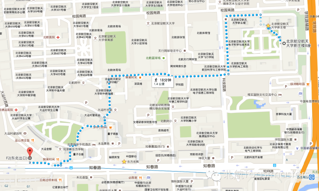

Maps
Time:19:30-21:30, every Friday
Venue:Room B104,New Main Buildin,Beihang University
Routing: From Zhichunlu Station to Room B104

Routing: From Xitucheng Station to Room B104

原文链接（公众号关闭后可能失效）：
https://mp.weixin.qq.com/s/Gw3xy8V3OWBgWUt7Yw8KyQ
https://mp.weixin.qq.com/s/Gw3xy8V3OWBgWUt7Yw8KyQ
第 171/539 篇 · 北航Toastmasters英文演讲俱乐部公众号存档
本页为抢救式本地归档，图文已永久保存。
本页为抢救式本地归档，图文已永久保存。